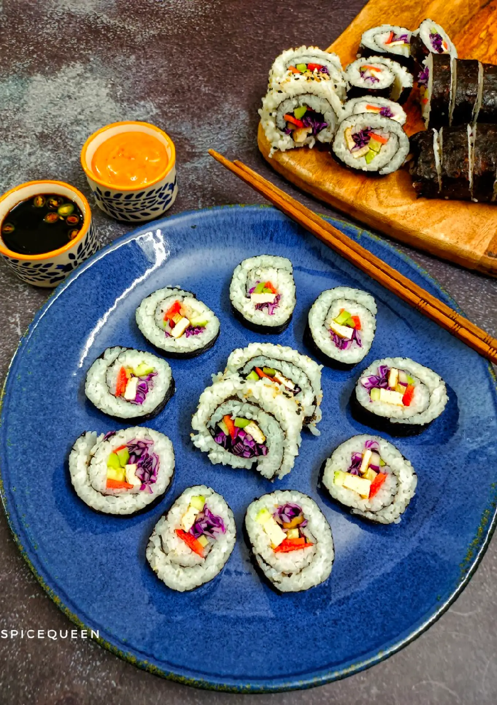

Sushi Rolls

Ingredients
- 3 cups sushi rice
- 4 cups water
- 1/2 cup vinegar
- 2 tbsp sugar
- 2 teaspoon salt
- 9 nori sheets
- 1 cucumber
- 1 carrot
- 1 cup purple cabbage
- 1 avocado
- 1 cup sauted mushrooms
- 4 lettuce leaves
- 1 tbsp black sesame seeds
Instructions
- Wash sushi rice 5 to 6 times until the water is almost clear.
Now in a heavy bottom pot, add rice and 4 cups of water.
Cook it on high flame until it starts boiling.
Lower the heat, stir the rice, cover the pot and cook on low heat for 12 to 15 minutes until the rice is done.
When the rice is cooked, the water will be absorbed completely.
Fluff the rice with a fork.
-
In a pot add vinegar, salt and sugar.
Cook it on low heat until all the sugar is dissolved.
Now take out the cooked rice in a glass, wooden or plastic bowl and add seasoning mixture to it and mix it carefully with a wooden spoon as metal bowl or spoon will react with vinegar.
Let the rice cool down completely at room temperature.
A picture of step 2 of Vegetarian Sushi Rolls.
- Prepare all the vegetables to make sushi rolls.
- Now place the bamboo mat on a worktop and cover it with the clear plastic so that it does not get messy.
Place nori sheet keeping shining side down.
Wet your hands, take some rice, place it on the sheet.
Spread it evenly leaving the edge on top.
Now arrange veggies at the bottom.
- Now lift the end of the mat near you and start rolling it tightly. Apply some water at the other end and press the roll.
Prepare all the rolls.
- Take a sharp knife, dip it in the water to avoid sticking of rice on the knife. Now cut the rolls in half first and then into smaller pieces.
- You can even keep the rice layer on top to make it differently.
To make this, spread the rice in the same way and sprinkle sesame seeds on top, but then you have to turn it down and place your stuffing.
Lift the mat and make a tight roll.
Cut it into small pieces.
- Serve vegetarian sushi rolls with pickled ginger, wasabi, soya sauce and peri mayonnaise.